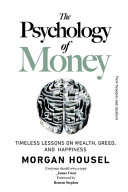

Book Review: The Time Machine

Summary: A Victorian scientist builds a machine that can travel through time. In the distant future he finds that, rather than advancing, human civilization has totally collapsed.
Author: H.G. Wells
Published in: 1895
Language: English
Genre: Science Fiction
Review: I think everybody should read this book before they die because you don't always come across such wonderful stories everyday! I completed the book in two days and it is really interesting. Even though it is a small story, don't skip the pages as you will be confused because something happens in almost all the pages.. If you are looking for good science fiction books, do read this one because the author perfectly explains his theory on time travel and I swear you will find science interesting as you complete the book more than you did.
Rating: 4.5/5
Write your review:
Rate this book out of 5:
Book Review: The Psychology of Money: Timeless Lessons on Wealth, Greed, and Happiness

Summary: The field of finance, including investment, personal finance, and business decisions, is typically presented as a mathematical one, where we are given precise instructions based on data and formulas. However, people in the real world don't use spreadsheets to make important financial decisions. At the dinner table or in the conference room, people mix in their own backgrounds, perspectives, egos, prides, marketing strategies, and peculiar motivations to come up with these decisions.
Author: Morgan Housel
Published in: 2020
Language: English
Genre: Finance, Investing, Money management
Review: "The Psychology of Money" offers valuable lessons that can benefit anyone. It's a book that I will undoubtedly return to time and time again, as its lessons are truly timeless.
Rating: 4.8/5
Write your review:
Rate this book out of 5: